第一部分 · 无模型的因果推断 · Part I — Causal inference without models
第 7 章 · 混杂
Hernán MA, Robins JM（2020）. Causal Inference: What If. Chapter 7. 本页为中文全文翻译，附译注。
假设一位研究者做了一项观察性研究，想回答的因果问题是："一个人抬头看天，会让路人也跟着抬头吗？"她发现第一个路人抬头与第二个路人抬头之间存在关联。但她还发现，头顶传来一声巨响时，人们往往会抬头。那么究竟是谁让第二个人抬头的——是前面那个人抬了头，还是那声巨响？她的结论是：一个人抬头的效应，被那声巨响的存在混杂了。
在随机化试验里，处理由抛硬币决定；但在观察性研究中，处理（比如一个人抬头看没抬头）可能由许多因素决定（比如那声巨响）。如果这些因素影响结局发生的风险（比如另一个人抬头看没抬头），那么它们的效应就和处理的效应纠缠在了一起。这时我们说存在混杂（confounding），它不过是已处理者与未处理者之间缺乏可交换性的一种形式。混杂常被视为观察性研究的主要缺点。在混杂存在的情况下，"关联不等于因果"这句老话即便研究人群无限大也照样成立。本章给出混杂的定义，并梳理调整混杂的方法。
7.1 混杂的结构
混杂的结构——也就是由处理与结局的共同原因造成的偏倚——可以用因果图来表示。举个例子，图 7.1（与图 6.1 相同）画的是处理 A、结局 Y，以及二者共享的（共同的）原因 L。这张图画出了处理与结局之间关联的两个来源：一是路径 A → Y，代表 A 对 Y 的因果效应；二是路径 A ← L → Y，它包含共同原因 L。那条通过共同原因 L 把 A 与 Y 连起来的路径 A ← L → Y，就是一条后门路径的例子。
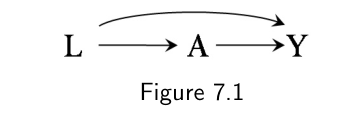
A、结局 Y 与它们的共同原因 L。图中 L → A → Y 是一条链，L 另有一条弧线箭头指向 Y（即 L → Y）。如果图 7.1 中的共同原因 L 不存在，那么处理与结局之间唯一的路径就是 A → Y，于是 A 与 Y 之间的全部关联都将来自 A 对 Y 的因果效应。也就是说，关联风险比 Pr[Y = 1|A = 1] / Pr[Y = 1|A = 0] 会等于因果风险比 Pr[Ya=1 = 1] / Pr[Ya=0 = 1]；关联就是因果。可共同原因 L 的存在，为处理 A 与结局 Y 之间的关联提供了另一个来源，我们把它称为 A 对 Y 效应的混杂。因为混杂，关联风险比不等于因果风险比；关联不是因果。
边注 在因果 DAG 中，后门路径是处理与结局之间的一条非因果路径，并且这条路径在把处理指向其他变量的所有箭头（处理的后代）都删掉之后依然存在。换句话说，这条路径上有一根箭头指向处理。
观察性研究中，混杂的例子多得很。下面是若干种处理对健康结局效应被混杂的例子：
- 职业因素：消防员这份工作
A对死亡风险Y的效应，如果"身体健壮"L既是成为在职消防员的原因、又是死亡风险更低的原因，就会被混杂。图 7.1 因果图所描绘的这类偏倚，通常被称为健康工人偏倚（healthy worker bias）。 - 临床决策：药物
A（比如阿司匹林）对疾病Y（比如卒中）风险的影响，如果这种药更可能被开给有某种状况L（比如心脏病）的个体，而这种状况既是治疗的指征、又是该病的危险因素，就会被混杂。心脏病L是卒中Y的危险因素，可以是因为L对Y有直接的因果效应（图 7.1），也可以是因为L与Y都被动脉粥样硬化U这个未测变量所导致（图 7.2）。这种偏倚叫作指征混杂（confounding by indication）或"选径"（channeling）；后一个词常常专门用来描述由患者特有的危险因素L促成医生在某一类药物中选用某一种药A所造成的偏倚。 - 生活方式：行为
A（比如运动）对Y（比如死亡）风险的影响，如果这一行为与另一种行为L（比如吸烟）相关，而后者既对Y有因果效应、又倾向于与A同时出现，就会被混杂。L、A、Y这几个变量的结构见图 7.3，其中未测变量U代表那类既导致缺乏运动、又导致吸烟的性格与社会因素。另一个常见问题是亚临床疾病U同时造成缺乏运动A和临床疾病Y风险上升；当L未知时，这种形式的混杂常被称为反向因果（reverse causation）。 - 遗传因素：一段 DNA 序列
A对某性状Y患病风险的影响，如果还存在另一段 DNA 序列L，它对Y有因果效应、并且在携带A的人群中更常见，就会被混杂。这种偏倚同样可由图 7.3 的因果图表示，它叫连锁不平衡（linkage disequilibrium）或人群分层（population stratification）；后一个词常专门用来描述在不同族裔人群的混合样本中开展研究所产生的偏倚。于是变量U可以代表族裔，也可以代表其他导致 DNA 序列连锁的因素。 - 社会因素：65 岁时的收入
A对 75 岁时残障程度Y的影响，如果 55 岁时的残障程度L同时影响日后的收入与残障程度，就会被混杂。这种偏倚可用图 7.1 的因果图表示。 - 环境暴露：空气中的颗粒物
A对冠心病Y风险的影响，如果还有别的污染物L本身导致冠心病、且其水平与A的水平同步波动，就会被混杂。这种偏倚也可用图 7.3 的因果图表示，其中未测变量U代表影响各种空气污染物浓度的天气状况。
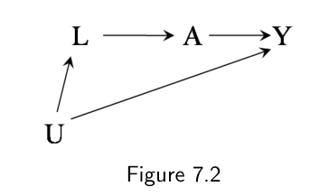
U 同时指向 L 与 Y，L 又指向处理 A；A 直接指向结局 Y。边注 有些作者更愿意把未测共同原因 U（以及从它出发的两根箭头）替换成一条由 U 所导致的那些测量变量之间的双向边。
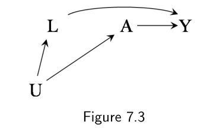
U 同时指向 L 与 Y；L 指向处理 A，另有弧线箭头表示 L 也指向 Y；A 直接指向 Y。边注 关于混杂的最早统计描述来自 Yule（1903）对离散变量的讨论，以及 Pearson 等（1899）对连续变量的讨论。Yule 把由混杂造成的关联称为"虚构的"（fictitious）、"虚幻的"（illusory）、"表面的"（apparent）；Pearson 等（1899）则称之为"虚假的"（spurious）相关。但这些关联一点也不虚构、一点也不虚幻、一点也不表面、一点也不虚假。由共同原因造成的关联是很实在的关联，只不过不能被解释为处理效应而已。用 Yule 的话说，它们是那种"最明显的物理意义都不该被赋予"（to which the most obvious physical meaning must not be assigned）的关联。
在上述所有例子里，偏倚的结构都是一样的：它源于存在一个被处理 A 与结局 Y 共享的原因（L 或 U），从而在 A 与 Y 之间留下一条打开的后门路径。我们把由处理与结局的共享原因造成的偏倚称为混杂；对于由处理与结局共享原因之外的结构性原因造成的偏倚，我们则用别的名字。为便于表述，本章自始至终假定可阳性性与一致性成立、因果图中所有节点都被完美测量、没有带方框的选择节点 S（也就是说数据是目标人群的随机样本）、并且不存在随机变异。含选择节点的因果图在第 8 章讨论，含错测节点的因果图在第 9 章讨论，随机变异在第 10 章讨论。
7.2 混杂与可交换性
现在我们把混杂——它是上一节用因果图定义的概念——与可交换性——前面几章用反事实定义的概念——联系起来。关于混杂与可交换性之间的关系，Greenland 与 Robins（1986，2009）有详细的讨论。
当可交换性 Ya ⊥⊥ A 成立时——比如在边际随机化试验中，所有个体接受处理的概率都相同——平均因果效应无需对任何变量作调整即可被识别。对二值处理 A，平均因果效应 E[Ya=1] − E[Ya=0] 就用条件均值之差 E[Y|A = 1] − E[Y|A = 0] 来计算。
当可交换性 Ya ⊥⊥ A 不成立、但条件可交换性 Ya ⊥⊥ A|L 成立时——比如在条件随机化试验中，接受处理的概率随 L 的取值而变——平均因果效应同样可以被识别。不过正如第 2 章所述，要在人群中识别因果效应 E[Ya=1] − E[Ya=0]，需要通过标准化或 IP 加权对变量 L 作调整。另外，正如第 4 章所述，条件可交换性还允许通过分层来识别任意 l 值下的条件因果效应 E[Ya=1|L = l] − E[Ya=0|L = l]。
在实践中，如果我们认为混杂很可能存在，一个关键问题就冒出来了：我们能不能判断，是否存在一组测量协变量 L 使得条件可交换性成立？这个问题很难回答，因为在复杂的因果系统中，用条件可交换性 Ya ⊥⊥ A|L 来思考往往并不直观。
本章会说明：只要知道生成数据的因果 DAG，这个问题是可以回答的。假设我们知道真实的因果 DAG（暂不考虑我们是怎么知道的：也许我们掌握足够的专业知识，也许是某位全知的神把它给了我们）。因果 DAG 究竟如何帮我们判断是否存在一组使条件可交换性成立的变量 L？主要有两条路子：（i）把后门准则用到因果 DAG 上；（ii）把因果 DAG 变换成一个 SWIG（单世界干预图）。SWIG 的做法更直接，但需要多一点的工具，所以我们先讲后门准则，SWIG 留到 7.5 节。
一组协变量 L 满足后门准则，当且仅当处理 A 与结局 Y 之间的所有后门路径都被对 L 的条件化所阻断，且 L 中不含处理 A 的任何后代。在忠实性假设以及技术要点 7.1 所讨论的另一个条件之下，条件可交换性 Ya ⊥⊥ A|L 成立当且仅当 L 满足后门准则。（下面会基于 SWIG 给出这一事实的一个简单证明。）至此，关于"给定一组协变量 L，给定 L 的条件可交换性是否成立"这类问题，我们都能给出答案。而通过逐一尝试处理的所有测量到的非后代的每一个子集，我们也就回答了"是否有某个子集使条件可交换性成立"这个问题。（事实上已有算法可以大幅减少为回答该问题所需尝试的子集数量。）
边注 在条件可交换性下，E[Ya=1] − E[Ya=0] = ∑l E[Y|L = l, A = 1] Pr[L = l] − ∑l E[Y|L = l, A = 0] Pr[L = l]。
边注 Pearl（1995，2009）提出了用于非参数识别因果效应的后门准则。
现在我们把后门准则（即可交换性）与混杂联系起来。后门准则成立的情形有两种。
（1）处理与结局没有共同原因。在图 6.2 中，处理与结局之间没有共同原因，因此没有需要阻断的后门路径。此时满足后门准则的变量集是空集，我们说不存在混杂。
（2）处理与结局有共同原因，但测到的非后代集合 L 的某个子集足以阻断所有后门路径。在图 7.1 中，满足后门准则的变量集是 L。于是我们说存在混杂，但不存在那种需要调整未测变量才能消除的残余混杂（那当然是不可能做到的）。为简洁起见，我们说不存在未测混杂。
第一种情形描述的是边际随机化试验，其中按预期不会有混杂，因为处理分配完全由抛硬币决定——或者它的计算机化升级版：随机数发生器——而硬币是抛不出结局的。也就是说，当处理是无条件随机分配时，已处理者与未处理者按预期是可交换的，因为不存在共同原因，或者等价地说，因为不存在打开的后门路径。边际可交换性 Ya ⊥⊥ A 等价于处理与结局没有共同原因。
第二种情形描述的是条件随机化试验，其中接受处理的概率对 L 取值相同的所有个体是一样的，但按设计，这个概率随 L 的取值而变，也就是说存在一根箭头 L → A。如果 L 同时也是结局的原因（图 7.1），或者是结局的某个未测原因的后代（图 7.2），这种设计就保证了混杂的存在。因此存在打开的后门路径。然而对协变量 L 作条件化会阻断所有后门路径，于是条件可交换性 Ya ⊥⊥ A|L 成立。当对 L 的条件化阻断了所有后门路径——也就是说，在 L 的各层之内已处理者与未处理者可交换——我们就说 A 的一组测量到的非后代 L 是混杂调整的充分集。
拿我们的心脏移植研究（一个条件随机化试验）举例。接受了移植的人（A = 1）与其他人（A = 0）是不同的：如果那些已处理者当初没有接受治疗，他们的死亡风险 Y 本来会高于那些实际未接受治疗的人——已处理者中重度心脏病的比例更高，而 L 是 A 与 Y 的共同原因。处理与结局存在共同原因，意味着已处理者与未处理者不是边际可交换的，但在给定 L 时是条件可交换的。第二种情形也正是我们在观察性研究中所指望的——研究者测了很多变量 L。
后门准则并不回答混杂的大小或方向。逻辑上完全可能：某些没被阻断的后门路径很弱（比如 L 对 A 或对 Y 的效应都不大），因而只造成很小的偏倚；也可能几条强的后门路径造成的偏倚方向相反，净偏倚因而很小。由于未测混杂并不是一个"有或没有"的问题，实践中就必须考虑偏倚的预期方向与量级（见精细辨析 7.1）。
7.3 混杂与后门准则
下面我们举若干例子，说明如何应用后门准则来判断 A 对 Y 的因果效应是否可识别，以及若可识别，需要哪些变量来保证条件可交换性。请记住：本章所有因果 DAG 中的节点都是完美测量的，且都没有被条件化。
在图 7.1 中存在混杂，因为处理 A 与结局 Y 共享原因 L，也就是 A 与 Y 之间存在一条经过 L 的打开的后门路径。不过这条后门路径可以通过对 L 作条件化来阻断。因此，只要研究者为所有个体采集了 L 的数据，给定 L 就不存在未测混杂。
在图 7.2 中也存在混杂，因为处理 A 与结局 Y 共享未测原因 U，也就是 A 与 Y 之间存在一条经过 U 的后门路径。（与 L、A、Y 不同，变量 U 没有被研究者测量。）理论上这条后门路径可以通过对 U 作条件化来阻断，从而消除混杂——如果当初采集了这个变量的数据的话。但这条后门路径也可以通过对 L 作条件化来阻断。所以给定 L 仍然不存在未测混杂。
在图 7.3 中同样存在混杂，因为处理 A 与结局 Y 共享原因 U，而后门路径也可以通过对 L 作条件化来阻断。所以给定 L 也不存在未测混杂。
现在看图 7.4。在这张因果图中，处理 A 与结局 Y 之间没有共同原因，因此不存在混杂。A 与 Y 之间经过 L 的后门路径（A ← U2 → L ← U1 → Y）之所以被阻断，是因为 L 在这条路径上是一个碰撞因子。于是 A 与 Y 之间的全部关联都来自 A 对 Y 的效应：关联就是因果。举个例子，假设 A 代表体力活动，Y 代表宫颈癌，U1 是癌前病变，L 是癌前病变的诊断检查（巴氏涂片），U2 是注重健康的性格（活动更多、更常去看医生）。那么在图 7.4 的因果图下，体力活动 A 对癌症 Y 的效应没有混杂，为计算人群中的 Pr[Ya=1] 或 Pr[Ya=0]（从而计算因果效应）不需要对 L 作任何调整。
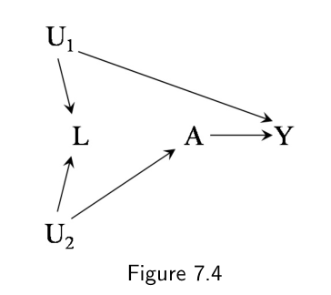
L 是 U1（癌前病变）与 U2（注重健康的性格）的共同效应；处理 A 与结局 Y 之间没有共同原因，A → Y 是唯一的直接通路。还是以前面四个例子为前提，假定 L、A、Y 的数据就足以识别因果效应。在这种情形下我们把 L 定义为混杂因素：如果仅靠 A 与 Y 的数据不足以识别（即存在结构性混杂），L 就是混杂因素。如果仅靠 A、Y 的数据就足以识别，我们就把 L 定义为非混杂因素。这两个定义等价于：若给定 L 有条件可交换性而无无条件可交换性（即存在结构性混杂），L 是混杂因素；若无条件可交换性成立，L 是非混杂因素。
因此，在图 7.1–7.3 中，L 是混杂因素，因为 Pr[Y = 1] 可以由标准化风险 ∑l Pr[Y = 1|A = a, L = l] Pr[L = l] 识别。在图 7.2 和图 7.3 中，L 并不是 A 与 Y 的共同原因，但我们仍然说 L 是混杂因素，因为需要它来阻断由 A 与 Y 的未测共同原因 U 所致的那条打开的后门路径。在图 7.4 中，L 是非混杂因素，而识别 Pr[Ya = 1] 的公式就只是条件均值 Pr[Y = 1|A = a]。
边注 图 7.1 至 7.4 的一个非正式定义："混杂因素是任何可以用来调整混杂的变量。"请注意这个定义并不循环，因为我们此前已经给出了混杂的定义。另一个非循环定义的例子是："音乐家是演奏音乐的人"——这是在我们已定义"音乐是什么"之后才说的。
有意思的是，在图 7.4 中，给定 L 的条件可交换性不成立，因此反事实风险 Pr[Ya = 1|L = l] 不等于分层风险 Pr[Y = 1|A = a, L = l]，L 各层内的条件处理效应不可识别。此外，通过标准化 ∑l Pr[Y = 1|A = a, L = l] Pr[L = l] 对 L 作调整，会给出 Pr[Ya] 的一个有偏估计。这背后的原因是：对 L 作调整会引入偏倚，因为对碰撞因子 L 的条件化打开了 A 与 Y 之间的后门路径（A ← U2 → L ← U1 → Y），而这条路径此前正是被碰撞因子本身阻断的。于是 A 与 Y 之间的关联就是"A 对 Y 的效应所致"与"打开的后门路径所致"两种关联的混合。关联不再是因果了。这是我们见到的第一个"无条件可交换性成立但条件可交换性不成立"的例子：平均因果效应可识别，但 L 各层内的条件因果效应一般不可识别。我们把条件效应中由此产生的偏倚称为选择偏倚，因为它源于对两个边际上相互独立的变量 U1 与 U2 的共同效应 L 的选择（条件化），其中一个与 A 相关，另一个与 Y 相关（见第 8 章）。
边注 无条件效应可识别但条件效应不可识别的可能性，由 Greenland 与 Robins（1986）用非图的方式论证过。图 7.4 中的条件偏倚由 Greenland、Pearl 与 Robins（1999）描述，并被 Greenland（2003）称为 M 偏倚（M-bias），因为其中涉及的变量结构——U2、L、U1——看起来像一个横躺着的字母 M。
边注 如果 U1 导致 U2，或 U2 导致 U1，或某个未测的 U3 同时导致两者，那么 A 与 Y 就会存在共同原因，我们便既没有无条件可交换性、也没有给定 L 的条件可交换性。
边注 碰撞因子的定义是相对于路径而言的：L 在路径 A ← U2 → L ← U1 → Y 上是碰撞因子，但在路径 A ← L ← U1 → Y 上不是。
图 7.5 的因果图是图 7.4 的一个变体，区别在于图 7.5 中多了一根箭头 L → A。这根箭头的出现造成了一条打开的后门路径 A ← L ← U1 → Y，因为 U1 是 A 与 Y 的共同原因，于是混杂存在。对 L 作条件化会阻断那条后门路径，但同时会打开另一条以 L 为碰撞因子的后门路径（A ← U2 → L ← U1 → Y）。因此在图 7.5 中偏倚是无解的：试图阻断混杂路径的动作会打开一条选择偏倚路径。既没有无条件可交换性，也没有给定 L 的条件可交换性。破解图 7.5 中偏倚的办法，是去测量：（i）位于 U1 与 A 或 Y 之间的某个变量 L1；或（ii）位于 U2 与 A 或 L 之间的某个变量 L2。第一种情况下，给定 L1 有条件可交换性；第二种情况下，给定 L2 与 L 有条件可交换性。例如，图 7.6 同时包含了位于 U1 与 Y 之间的变量 L1，以及位于 U2 与 A 之间的变量 L2。关于图 7.6 中因果效应可识别性如何随测量了哪些变量而变化，见精细辨析 7.2。
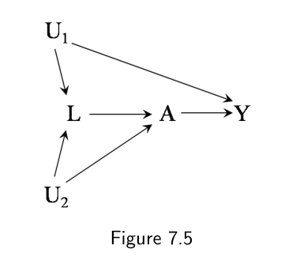
L → A。L 既是 U1 与 U2 的共同效应，又是指向处理 A 的原因；对 L 作条件化会同时阻断一条后门路径、打开另一条。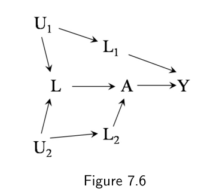
L1（位于 U1 与 Y 之间）与 L2（位于 U2 与 A 之间）。补测之后，给定 L2 与 L 就有条件可交换性。本节这些因果图画出了由处理与结局之间打开的后门路径所致的两类结构性可交换性缺失。第一个来源是处理与结局的共同原因的存在——它造成一条打开的后门路径。第二个来源是对共同效应的条件化——它可能打开一条原本被阻断的后门路径。出于教学目的，我们把"混杂"一词留给第一类，把"选择偏倚"留给第二类。另一种在结构上定义混杂的方式是"由 A 与 Y 之间打开的后门路径造成的偏倚"。这一定义与我们的定义完全一致，只是它把图 7.4 中因对 L 作条件化造成的偏倚也叫做混杂，而不是选择偏倚。同一个定义还可以等价地表述为：混杂是"任何会因 A 的随机分配而消失的系统性偏倚"。这不难看出：图 7.4 中因对 L 作条件化而诱发的偏倚，不可能发生在一个处理 A 被随机分配的试验里，因为随机分配确保不存在一个同时导致 A 与 L 的未测 U2，于是对 L 作条件化也就不会再打开后门路径。
处理与结局存在共同原因（混杂的结构性定义），这是关于研究人群与外部世界的一个实质性事实，与选择何种分析方法无关。而把混杂定义为"任何会因随机化而消失的偏倚"，则意味着混杂是否存在依赖于分析方法。在图 7.4 中，我们不对 L 作调整就没有混杂，一调整反倒引入了混杂。
不过，在两个定义之间做选择纯粹是口味问题，没有实际影响——因为我们关于可识别性的一切结论都只依赖于条件可交换性或无条件可交换性是否成立，而不依赖于我们如何定义混杂。下一章会详细讨论混杂与选择偏倚的区别。
7.4 混杂与混杂因子
上一节我们描述了如何用因果图判断混杂是否存在，以及若存在，如何判断给定的一组测量变量 L 是否为混杂调整的充分集。这一流程要求预先知道那张因果 DAG——它必须包含处理 A 与结局 Y 共享的所有原因，包括测到的和没测到的。一旦因果图已知，我们只需应用后门准则，判断哪些变量需要调整。
相比之下，处理混杂的传统做法主要基于观测到的关联，而不是先验的因果知识。传统做法先把满足某些（主要是）关联条件的变量标为混杂因素，然后要求在分析中对这些所谓混杂因素作调整。若调整后的估计与未调整的估计不同，就宣称存在混杂。
在传统做法下，一个混杂因素被定义为满足以下三个条件的变量：（1）它与处理相关；（2）它在给定处理的条件下与结局相关（"在给定处理的条件下"常常被替换成"在未处理者中"）；（3）它不位于处理与结局之间的因果路径上。然而，传统做法可能导致不恰当的调整。回到图 7.1–7.4 来看个究竟。
在图 7.1 中，变量 L 与处理相关（因为它对 A 有因果效应），在给定处理的条件下与结局相关（因为它对 Y 有直接因果效应），且不位于处理与结局之间的因果路径上。在图 7.2 中，变量 L 与处理相关（因为它对 A 有因果效应），在给定处理的条件下与结局相关（因为它与 Y 共享原因 U），且不位于因果路径上。在图 7.3 中，L 与处理相关（它与 A 共享原因 U），在给定处理的条件下与结局相关（它对 Y 有因果效应），且不位于因果路径上。
因此按照传统做法，在图 7.1–7.3 所代表的情形中 L 是混杂因素，需要对它作调整。这也是我们上一节使用后门准则所得出的结论。对图 7.1–7.3 而言，传统的关联式做法与在因果图上应用后门准则之间并无分歧。
现在再看图 7.4。这张图中不存在混杂，且按 7.3 节给出的定义，L 是非混杂因素。然而 L 满足传统混杂因素的各项条件：它与处理相关（它与 A 共享原因 U2），在给定处理的条件下与结局相关（它与 Y 共享原因 U1），且不位于因果路径上。于是按照传统做法，L 是一个应当调整的混杂因素——即便根本不存在混杂！但正如上文所见，由于选择偏倚，对 L 作调整会给出人群中因果效应的一个有偏估计量。图 7.7 是传统做法导致对 L 不恰当调整的另一个例子。
这些例子表明：关联的或统计的标准不足以刻画混杂。一个几乎完全依赖统计考量来定义混杂因素的做法，会像图 7.4 与图 7.7 所示的那样给出错误的建议——即使结构上并不存在混杂，也去调整某个"混杂因素"。为了解决图 7.4 中的这个问题，传统做法的追随者可能会把关联条件"(2) 它在给定处理的条件下与结局相关"替换成结构条件"(2) 它是结局的原因"。这个修改过的混杂因素定义确实避免了在图 7.4 中对 L 的不恰当调整，却制造了一个新问题：它不再把 L 视为图 7.2 中那个需要调整的混杂因素。见技术要点 7.2。
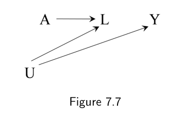
L 同时是 A 与 Y 的原因——因为它是共同原因 U 的后代；A 与 Y 之间没有其他路径。对 L 作条件化会打开碰撞路径。传统做法的问题在于，它在没有足够因果知识的情况下先定义混杂因素，然后要求对这些所谓混杂因素作调整；而这会误导研究者在调整有害的时候去作调整。问题出在：若改变后的估计与未改变的估计不同，传统做法就宣布存在混杂。然而估计值的变化还可能由混杂以外的原因引起，包括调整非混杂因素所造成的选择偏倚（见第 8 章），以及使用不可压缩（noncollapsible）的效应度量（见精细辨析 4.3）。因为有这些问题，试图用"估计值是否改变"来定义混杂的做法早就被放弃了。
相比之下，结构做法从显式地识别混杂的来源入手——即处理与结局的那些共同原因，如果它们全都被测量，就足以调整掉混杂——然后再识别一组充分的调整变量。
结构做法清楚地表明：某个变量是否应当进入充分集，取决于集合里已经包含了哪些变量。例如在图 7.2 与图 7.3 中，需要用变量集 L 来阻断后门路径，因为变量集 U 没被测量。于是我们可以说 L 中的变量是混杂因素。然而如果变量 U 被测量了并被用来阻断后门路径，那么给定 U，L 中的变量就不再是混杂因素了（另见精细辨析 7.3）。给定一张因果 DAG，混杂是一个绝对概念，而混杂因子是一个相对概念。VanderWeele 与 Shpitser（2013）也提出过混杂因素的形式化定义。
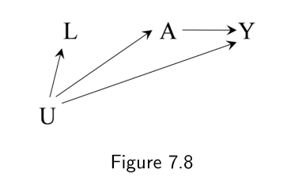
U 同时指向处理 A 与结局 Y；测量到的变量 L 是 U 的代理（U 也指向 L），L 同时指向 A。混杂的结构化处理方式强调：从观察性数据作因果推断需要先验的因果知识。这种因果知识被概括在一张因果 DAG 里，它编码了研究者关于这个因果网络的信念或假设。当然，无法保证研究者的因果 DAG 是正确的，因此完全可能与研究者的信念相反——他们所选的调整变量集未能消除混杂，或引入了选择偏倚。不过，混杂的结构化处理有两个重要优点。第一，它避免了信念与行动之间的自相矛盾。举例来说，如果你相信图 7.4 就是真实的因果图——因而 A 对 Y 的效应不存在混杂——那么无论各种非结构性的混杂因素定义怎么说，你都不会去调整变量 L。第二，研究者关于混杂的假设变得显式，因而可以被其他研究者显式地批评。
边注 从技术上讲，研究者并不需要结构性知识。他们只需要知道一组能保证条件可交换性的变量。然而获取结构性知识——因而画出因果图——恐怕是思考条件可交换性最自然的做法。
边注 Hernán 等（2002）描述过一个运用因果结构知识来评估混杂的实用例子。
7.5 单世界干预图
可交换性被翻译成图语言，就是：A 与 Y 两个节点之间不存在打开的路径——除了那些从 A 出发的路径。第 7 至 9 章描述了可交换性缺失在因果图中的不同表现形式。比如本章讨论的混杂，就是由于处理与结局之间存在打开的后门路径而违反可交换性。
无条件可交换性 Ya ⊥⊥ A 与后门准则之间的等价性看起来颇有点魔法：反事实独立性与后门路径的缺失之间似乎没有任何明显联系，因为反事实根本没有作为变量出现在因果图上。既然图对通过 d-分离来判断独立性如此有用，很自然会想构造把反事实也作为节点放进去的图，从而让无条件可交换性与条件可交换性可以直接从图上读出来。
一种新型的图——单世界干预图（single-world intervention graph, SWIG）——通过显式地把反事实变量纳入图中，把反事实方法与图方法统一了起来。一张 SWIG 描绘的是这样一个假想世界中所观测到的变量与因果关系：在这个世界里，所有个体都接受了处理水平 a。也就是说，SWIG 是一张表示"由单次干预所创造的反事实世界"的图。相比之下，标准因果图上的变量表示的是实际世界。这样一来，SWIG 就可以被看作一个函数：它把给定的因果图在给定干预下变换成另一个图。下面几个例子描述的就是这种变换。
假设图 7.2 的因果图表示的是观测到的研究数据。图 7.9 的 SWIG 就是图 7.2 的一次变换，它表示一个所有个体的处理都被设定为固定值 a 的世界。
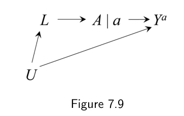
A（无干预时的自然取值）与右边的 A|a（干预后被固定为 a），结局节点改写为 Ya；其余变量不加上标，因为它们在时间上都先于 A，不受干预影响。在 SWIG 中，处理节点被拆成左右两半，拆开之后它们应当被当作彼此独立的节点（变量）来看待。右边那一半编码的是干预下处理的值 a，它继承了原因果 DAG 中所有从 A 出发的箭头。左边那一半编码的是在无干预情况下会观测到的处理值 A，即处理的自然取值。它继承了因果 DAG 中所有指向 A 的节点，因为在干预后的（反事实）世界里，它的因果输入与实际世界相同。注意 A 没有一根指向 a 的箭头，因为在干预后的世界里 a 对所有个体都相同，也就是一个常数。
我们假定处理的自然取值 A 良定义，尽管在干预 a 下我们通常无法测量它。在某些情形下 A 其实是可测的：近期的实验表明，脑电图（EEG）记录能够探测到个体在自己意识到决策之前至多 1/2 秒将要做出的选择。若确实如此，那么 A 实际上可以通过脑电图测得，同时还留出 1/2 秒的时间来进行干预、给予处理 a。
边注 Richardson 与 Robins（2013）表明，SWIG 克服了此前所提出的孪生因果图（Balke 与 Pearl 1994）的若干缺陷。
在 SWIG 中，结局是 Ya，即干预后的世界里 Y 的值。其余变量在时间上都先于 A，因而不受干预影响，取值与观测世界相同。也就是说，它们不被标为反事实变量。事实上，任何非 A 后代的变量都不必标为反事实，因为在忠实性假设之下（这是我们的假设），处理对任何个体的非后代都没有因果效应。在我们的因果模型下，给定 L 的条件可交换性 Ya ⊥⊥ A|L 成立，是因为在给定 L 之后 Ya 与 A 之间的所有路径都被阻断了，即 Ya 与 A 在给定 L 时 d-分离。
边注 在 FFRCISTG 模型下可以证明，d-分离同时也蕴含 SWIG 上的统计独立性。
边注 在单次干预的世界里，a 是一个常数，因此不能影响其他变量。不过在画 SWIG 时，我们仍然从 a 引出箭头，把这当作一种方便的记账方式，用来记下原 DAG 中被 A 直接影响的那些变量。
现在来看图 7.4 的因果图与图 7.10 的 SWIG。边际可交换性 Ya ⊥⊥ A 成立，因为在 SWIG 上 Ya 与 A 之间的所有路径都被阻断了（不需要条件化 L）。相比之下，给定 L 的条件可交换性 Ya ⊥⊥ A|L 不成立，因为在 SWIG 上，当碰撞因子 L 被条件化时，路径 Ya ← U1 → L ← U2 → A 是打开的。这就是为什么 A 与 Y 的边际关联是因果的，而给定 L 的条件关联不是，从而任何对 L 作调整的方法都会导致偏倚。这些例子展示了 SWIG 如何统一反事实方法与图方法。事实上很容易看出：在 SWIG 上，Ya 在给定 L 时与 A d-分离，当且仅当 L 是一个非 A 的后代、且阻断了从 A 到 Y 的所有后门路径（另见精细辨析 7.4）。
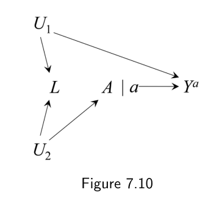
Ya 与 A 之间所有路径都被阻断（边际可交换）；一旦条件化碰撞因子 L，路径 Ya ← U1 → L ← U2 → A 被打开（条件不可交换）。7.6 混杂调整
在没有随机化的情况下，因果推断依赖一个无法检验的假定：我们已经测量了一组构成混杂调整充分集的变量 L，即一组非处理的 A 后代、且包含足够多的变量以阻断从 A 到 Y 的所有后门路径。在这个"给定 L 的条件可交换性"的假定下，可以用标准化与 IP 加权计算人群中的平均因果效应。不过如 4.6 节所讨论的，标准化与 IP 加权并不是观察性研究中仅有的混杂调整方法。调整混杂因素 L 的方法可以分为两大类：
- g 方法：标准化、IP 加权与 g 估计。这些方法（那个 "g" 是 "generalized" 的缩写）利用给定
L的条件可交换性来估计A对Y的因果效应，目标是整个人群或人群的任意子集。在我们的心脏移植研究中，我们在 2.4 节（标准化）与 2.5 节（IP 加权）里用 g 方法调整了疾病严重程度L带来的混杂。第二部分描述了 g 方法的基于模型的推广：参数化 g 算法（标准化）、边际结构模型的 IP 加权、以及嵌套结构模型的 g 估计。 - 传统的基于分层的调整方法：分层（包括限制）与匹配。这些方法利用给定
L的条件可交换性来估计由L定义的子集内A与Y的关联。在我们的心脏移植研究中，我们在 4.4 节（分层）与 4.5 节（匹配）里用基于分层的方法调整了疾病严重程度L带来的混杂。第二部分描述了传统分层的基于模型的推广：结局回归。
边注 分层与匹配的一个常见变体，是把每个个体的变量 L 替换成该个体接受处理的估计概率 Pr[A = 1|L]：这就是倾向性评分（Rosenbaum 与 Rubin 1983）。见第 15 章。
标准化与 IP 加权所模拟的，是"假如涉及测量变量 L 的后门路径不存在"时人群中的 A-Y 关联。例如 IP 加权是通过造出一个伪人群来做到这一点的——在伪人群中处理 A 与测量混杂因素 L 独立，也就是把从 L 指向 A 的那根箭头"删掉"。相比之下，基于分层的传统方法并不删掉 L 到 A 的箭头，而是去计算观测人群某个子集内的条件效应，这可以用加一个选择方框来表示。在第三部分（聚焦于时变处理）我们解释为什么在使用标准化或 IP 加权时"删掉"箭头 L → A 是有利的，以及为什么 g 估计是一般而言唯一有效的基于分层的方法。传统分层方法的偏倚在第 20 章描述。在处理随时间变化的场景中，混杂因素也随之变化，此时 g 方法是对抗混杂的首选，因为传统的分层方法可能带来选择偏倚。
以上所有方法都要求给定 L 的条件可交换性。然而，混杂有时可以用一些不需要条件可交换性的方法来处理。这类方法的例子有双重差分（技术要点 7.3）、工具变量估计（第 16 章）、近端推断（proximal inference，技术要点 7.3）、前门准则（技术要点 7.4），以及其他一些。遗憾的是，这些方法要求的替代性假定与条件可交换性一样，都无法验证。因此在实践中，由此得到的效应估计的有效性并无保证。而且，这些方法一般不能用于涉及时变处理的因果问题。结果就是，在许多研究问题上它们被排除在考虑之外。对于时不变处理，调整方法的选择取决于：在具体场景中，人们认为哪一套无法验证的假定——条件可交换性，还是那些替代性条件——更可能成立。
在许多观察性研究中，实现条件可交换性可能是一个不切实际的目标。但如 3.2 节所讨论的，可以利用关于因果结构的专家知识来尽可能接近这个目标。因此在观察性研究中，研究者会测量许多变量 L（它们都是处理的非后代），以期确保已处理者与未处理者是条件可交换的。他们的指望是：即便存在共同原因（即混杂），所测量的变量 L 也足以阻断所有后门路径（不存在未测混杂）。然而这种尝试没有成功的保证，这使得从观察性数据作因果推断成为一件有风险的事。
此外，专家知识还可以用来避免调整那些可能引入偏倚的变量。至少，研究者一般应当避免对那些受处理或受结局影响的变量作调整。当然，深思熟虑且富有知识的研究者完全可能认为，两种或更多种因果结构——它们可能导致关于混杂与混杂因子的不同结论——同样合理。那样的话，他们会做多份分析，并明确写出每一份分析为成立所需的因果结构假设。遗憾的是，你永远无法确定所考虑的这批因果结构里就包含真实的那个；用观察性数据时，这种不确定性是无法回避的。
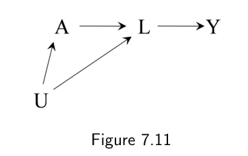
L 是处理 A 的后代，U 是 A 与 L 的共同原因，A → L → Y 是从 A 到 Y 的唯一通路。对 L 作条件化阻断了后门路径，但也阻断了全部因果路径。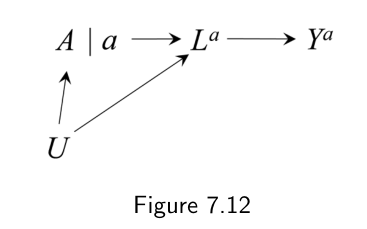
L 被替换为反事实变量 La（若所有人都接受处理 a 时会观测到的 L 的值）；La 阻断了 Ya 与 A 之间的所有路径。观察性研究中始终存在混杂威胁，这带来一个科学上的后果。假设你做了一项观察性研究，要量化心脏移植 A 对死亡 Y 的影响。你尽了最大努力（比如请教领域专家）来识别并测量混杂因素，并在调整了疾病严重程度 L 之后假定不存在未测混杂。一位批评者说："这项观察性研究的推断可能不正确，因为存在潜在的混杂。"这位批评者说的不是一句科学判断，而是一句逻辑判断。既然任何观察性研究的发现都可能被混杂，那么显然你的研究结果也可能被混杂。如果批评者的本意是为你这项研究的具体缺陷提供证据，那他就失败了。他的批评毫无信息量，因为他只是把一个你和他在研究开始之前就已经知道的观察性研究的固有属性又说了一遍。
要对你的研究提出中肯的批评，批评者需要进入一场真正的科学对话。举例来说，批评者可以引用与你的发现相矛盾的实验或观察证据；或者他可以这样说："这项观察性研究的推断可能不正确，因为存在由吸烟引起的潜在混杂——吸烟是这样一个共同原因，通过它可能仍留有一条打开的后门路径。"后一种说法为你对"不存在未测混杂"这一假定提出了一个可检验的挑战。举证责任又回到你这边。你的下一步是设法调整吸烟这一因素，或者在拿不到吸烟数据的情况下，做一次敏感性分析来考察吸烟可能引入的偏倚。
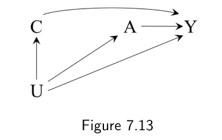
C 是处理之前测得的结局；未测原因 U 同时导致 C 与 Y，处理 A 只影响 Y。E[C|A = 1] − E[C|A = 0] 衡量的是混杂的大小。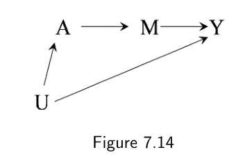
A → M → Y 中 M 完全中介，且 A-M 与 M-Y 之间都没有未测的混杂；A 与 Y 之间则共享未测原因 U。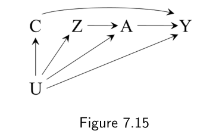
C（U 的后代，不受 A 影响）与负对照处理 Z（U 的后代，不影响 Y）。在 U、C、Z 都是离散的额外条件下，近端推断可以非参数地识别 A 对 Y 的因果效应。上面这番讨论虽然只限于混杂造成的偏倚，但要从观察性数据作有效的因果推断，还必须不存在选择偏倚与测量偏倚所致。不过与混杂不同，这两类偏倚在随机化试验与观察性研究中都可能发生。
在本章把混杂讲清楚之后，下一章将呈现已处理者与未处理者之间可交换性缺失的另一个潜在来源：把个体选入分析。